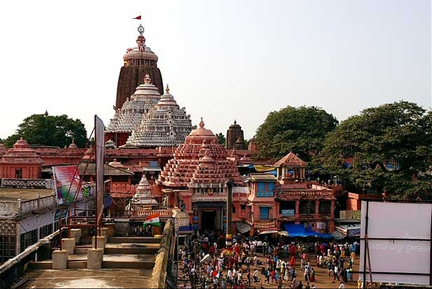
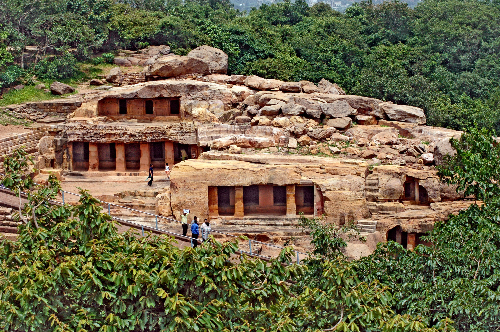

Sun Temple, Konark is one of the famous monuments in Odisha.
Built in the shape of a giant chariot, the temple is dedicated to Sun God. While you are here, you can also visit the archeological museum located inside the temple complex. The temple is believed to be more than 2,000 years old. However, it is well-maintained and you can still admire the architecture and sculptures. to know more click here
The Undavalli Caves are ancient cave temples believed to be built between 4th and 5th centuries by Gupta dynasty. The caves are located on a hill overlooking the Krishna River. These caves have been carved out of solid sandstone on a hillside.
to know more click here

Puri is majorly known for Sri Jagannath Puri Temple. It was King Indradyumna who built the famous temple in the 11th century. It is one of the historical places in Odisha which is frequented by millions of devotees as well as tourists all round the year. to know more click here

Khandagiri Caves are manmade caves which were built in the 2nd century. The figures and inscriptions in the caves are something to witness. These caves were dug during the period of Mahameghavahana Dynasty, King Kharavela. The Jain and Buddhist monks used to meditate in these caves.
to know more click here
to know more click here